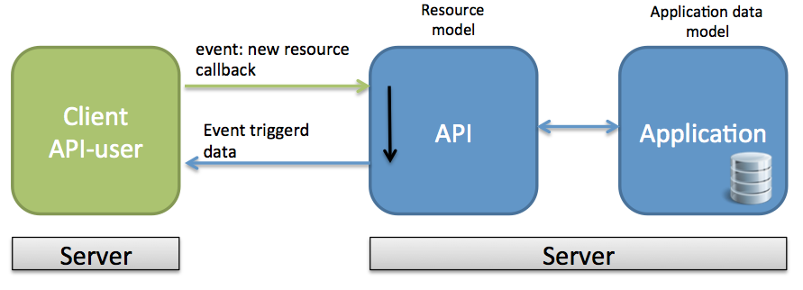
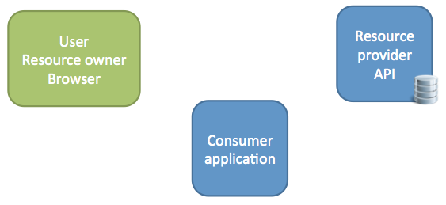
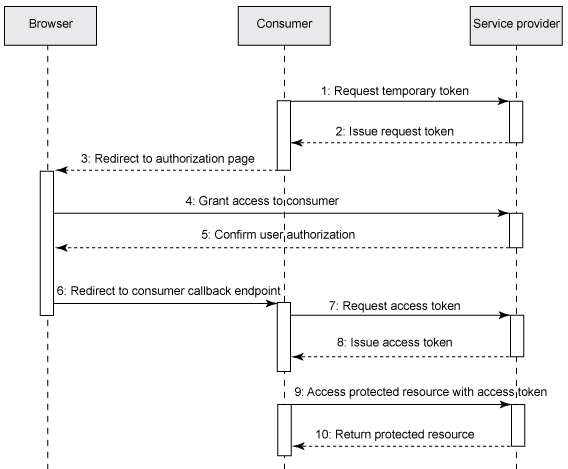
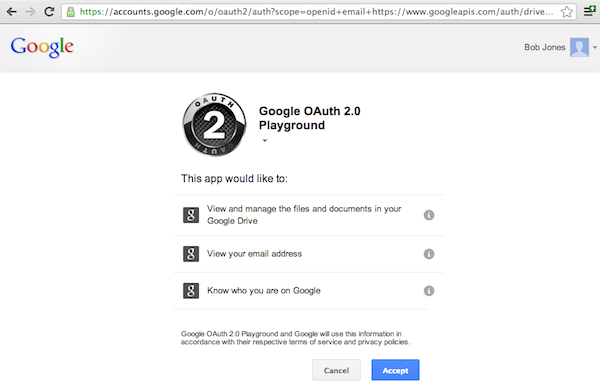
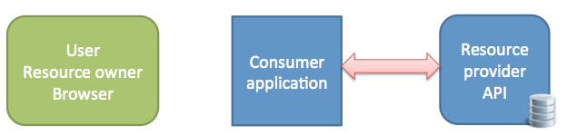
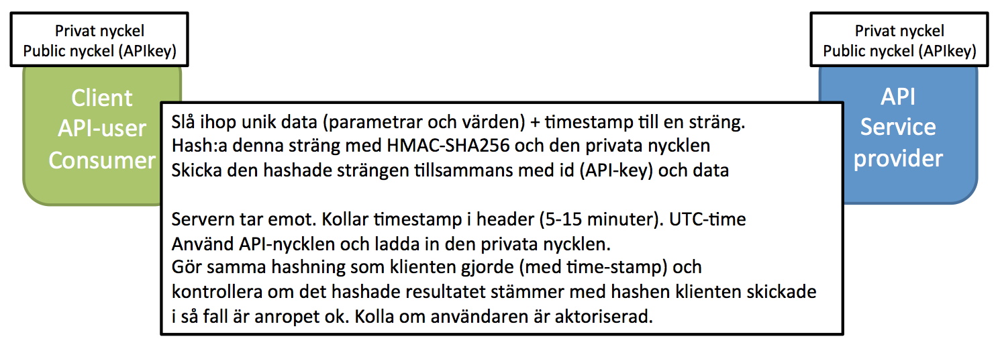

Webbramverk, 1DV450
Linnéuniversitetet, vt 2015
RESTful part 2
Pragmatiskt RESTful webb-API
Vad bygger vi?


RESTful
- Enkelhet
- Tydlighet
- Oberoende
- Behjälpligt
- Pragmatiskt
- Surfa genom ditt API
Paul Signac - In the time of harmony:
http://commons.wikimedia.org/
GET
GET /products
GET /products/hd-1432
Efterfråga en representation av en resurs
Collection resource vs instance(singelton) resource
Read-only, safe, påverkar inte resursen
Servern svarar (exempel)
200 OK + data
301 Moved Permanently + location
404 Not Found
DELETE
DELETE /products/hd-1432
Tar bort en resurs
Not safe, Idempotent
Servern svarar (exempel)
200 OK + meddelande och/eller den borttagna resursen
202 Accepted
204 No Content
404 Not Found
POST
POST /products
POST-to-append (skapa) or Overload POST
Data skickas med, tala om för servern vilket format man skickar
Servern svarar (exempel)
201 Created + information
400 Bad Request + information
403 Forbidden
PUT
PUT /products/1325
Uppdaterar en resurs, Om resursen inte finns skapas resursen?
un-safe, indemptens
200 OK
204 No content
PATCH
PATCH /products/1325
Partial update
Data skickas med som ska uppdateras
200 OK
204 No content
...

Beskriva en resurs tillstånd
- Accept, Content-Type
- Du vet inte din användares användarfall
- "Complete auto-discovery"
- Var noga med valid JSON/XML
- Hur gör andra API:er?
Information och struktur - Instance
GET /notifications/120u76et
{
"instance" :
{
"self" : "http://www.example.com/api/v1//notifications/120u76et",
"data" : [
{"note" : "Köp mjölk!"},
{"date_posted" : "2014-01-23T05:10:12.930Z"},
{"author" : "thajo"}
],
"links" : [
{"author" : "http://www.example.com/authors/thajo"},
{"author_avatar" : "http://www.example.com/authors/thajo.png"}
]
}
}
Inspired by: http://amundsen.com/media-types/collection/
Information och struktur - Collection
{
"collection" :
{
"self" : "http://www.example.com/api/v1/notifications",
"items" : [
{
"href" : "http://www.example.com/api/v1//notifications/120u76et",
"data" : [
{"note" : "Köp mjölk!"},
{"date_posted" : "2014-01-23T05:10:12.930Z"},
{"author" : "thajo"}
],
"links" : [
{"author" : "http://www.example.com/authors/thajo"},
{"author_avatar" : "http://www.example.com/authors/thajo.png"}
]
},
{
/* ... New item here */
}
]
}
}
Inspired by: http://amundsen.com/media-types/collection/
Formatera svaret - Felmeddelanden
# 404 Not Found
{
"status": 404,
"code": 40483,
"message": "Oops! It looks like that url does not exists.",
"developerMessage": "The resource 'http://www.example.com/api/produkter'
does not exist.",
links : [
{"moreInfo": "http://www.example.com/api/errors/40483"},
{"documentation" : "http://www.example.com/api/doc"}
]
}
Information och struktur
GET /notifications/120u76et
{
"instance" :
{
"self" : "http://www.example.com/api/v1//notifications/120u76et",
"data" : [
{"name" : "note", "value" : "Köp mjölk", "type" : "text"},
{"name" : "date_posted", "value" : "2014-01-23T05:10:12.930Z", "type" : "datetime"},
{"name" : "author", "value" : "thajo", "type" : "string"},
{"name" : "category", "value" : "to-do", "type" : "string"}
],
"links" : [
{"rel" :"author", "href" : "http://www.example.com/authors/thajo"},
{"rel" :"category", "href" : "http://www.example.com/category/to-do"}
]
}
}
Egen mediatyp (Custom media-type)
Många API:er använder "core JSON/XML"
Det finns möjlighet att definiera egna "kontrakt"/media-typer mellan server och klient.
Content-Type: application/vnd.collection+json
Content-Type: application/vnd.github+json
Content-Type: application/vnd.coursepress-data+json
Man har möjlighet att beskriva strukturen av respresentationerna (dokumenten).
Utformad efter egen problemdomän
Versioning
Precis som all mjukvara kommer ditt API behöva uppdateras
Bakåtkompabilitet viktigt. Ge användarna en chans att ställa om. Vi måste kunna hantera versioner!
Uppdatera sällan!
GET http:⁄⁄www.api.example.com/v1/products
GET http:⁄⁄www.api.example.com/v2/products
# No fun hacking in browser
Accept: application/vnd.coursepress-data+json;version=2.0
Accept: application/vnd.github.v3+json
http://stackoverflow.com/questions/389169/best-practices-for-api-versioning
URL:er bör hållas kontakta så lnge som möjligt
Partial response (filtrering) & Pagination
⁄users⁄thajo:(firstname, lastname, email)
⁄users⁄thajo?fields=firstname, lastname, email
⁄users?page=3&rrp=25
⁄users?start=100&count=25
⁄users?offset=100&limit=25
{
"prev": "http://localhost/api/v1/users/?offset=0&limit=25",
"next": "http://localhost/api/v1/users/?offset=50&limit=25"
}
I http-protokollet finns Content-Range?
Rate limit
Begränsa antalet anrop till ditt API.
Headers som börjar med X har använts som custom headers
- X-Rate-Limit-Limit - Antalet anrop inom en tidsperiod
-
- X-Rate-Limit-Remaining - Antal kvarstående anrop
- X-Rate-Limit-Reset - Antal sekunder kvar tills nästa "nollställning"
429 Too Many Requests
"Web hooks"
Låt användaren av ditt API registrera sig för ett event.
Server-to-server
pubsubhubbub


Dokumentation
Att tänka på!
Gör det enkelt och inbjudande för utvecklarna att använda ditt API
TTFR - Time to first request
Lyssna på användarna av ditt API
Var behjälplig mot klienten
Bistå med programmeringsbibliotek?
Ha en bra dokumentation - från början!
Lättfunnen och väldefinierad Terms of Service
Säkerhet!
Säkerhet

Foto cc by:
http://www.flickr.com/photos/111692634@N04/
Ett api är inte nåt snabbhackat till din mobilapplikation!

HTTPS - HTTP over SSL/TSL
Foto cc by:
http://www.flickr.com/photos/intelfreepress//
Säkerhet
Authentication (Autentisering) - Fastställande av identitet
Authorization (Auktorisering) - Vilka resurser ska en identitet ha tillgång till

REST är stateless - autentisering i varje request
Felkoder från servern
401 Unauthorized
Statuskoden för Autentiseringsfel (Authentication)
"Du är inte inloggad, din inloggning misslyckades. Var god försök igen!"
403 Forbidden (Authorization)
Statuskoden för Auktoriseringsfel
"Tyvärr! Jag vet vem du är men du är inte tillåten att komma åt dessa resurser. Stör mig inte på denna adressen igen!"
Ibland skickas en 404

Säkerhetsstrategier för RESTful webb-API
- Öppet? Read-only? API-nyckel endast för statistik
- Basic Authentication username/password
- Basic Authentication API-keys
- OAuth 2- or 3-legged
- Signed HMAC signature
HTTP Basic authentication (RFC 2617)
# server HTTP Header
401 Unauthorized HTTP/1.1
WWW-Authenticate: Basic realm="my api"
# client HTTP header (base64-encodat username/password - ej krypterat)
Authorization: Basic Kl52GFDS%DH6H12JD#543
MÅSTE ANVÄNDA HTTPS!
Enkelt! Alla kan hantera!
Username/password vs. API-key(token-based)
- passwords är inte konfetti, de ska inte spridas!
- API nycklar är svårare att gissa
- Password reset - Användaren av ditt API har flera klienter
- Ofta snabbare med API-nycklar (bcrypt)
- Spårbarhet, en nyckel per applikation
# Clientside
Authorization: Token " + access_token
# beware of history, logging and proxies
GET http:⁄⁄api.example.com/resource/id?token=api_key
OAuth

- Google AuthSub
- Yahoo BBAuth
- Flickr API
Foto from Wikipedia
Varför OAuth?

- Vill undvika att tredjeparts-applikationer (dina API-consumers) hanterar användarnas lösenord
- Dina API-klienter vill slippa hantera dina användare
- Man vill begränsa åtkommsten till resurser
- Som resursägare kan jag återkalla en tredjepartsapplikations rättigheter
OAuth
OAuth 1.0- OAuth 1.0a (2010)
- OAuth 2.0 (oktober 2012)
- 3-legged OAuth (user/resource owner - API consumer - service provider)
- 2-legged OAuth (API consumer - service provider)


Ska jag implementera en OAuth service?
Har din tjänst "resource owners"?
Kommer många användare av ditt API bygga klienter
där de vill komma åt data som hör till en "resource owners"?
Krångligt?
2-legged (OAuth 2.0)
OAuth 1.0a använde signerade requests. OAuth 2.0 använder en enklare och osäkrare modell med bearer token. Kräver HTTPS

-
Applikationens utvecklare registrerar den hos tjänsten:
client_id, client_secret
-
Applikationen skickar en request till
serviceproviderns "auth-endpoint":
client_id, client_secret, grant_type=client_credentials
-
Tjänstens server svarar med en access-token (Bearer Token)
access_token, expires_in, token_type
- Nu kan access-token (bearer) användas för giltiga anrop
2-legged / HMAC
- Verifiera användaren och dess behörighet på resurserna
- In-transit data protection - Signera dina request med privat nyckel
- Skydd mot reply-attacks - timestamp (session-token)

http://docs.aws.amazon.com/AmazonS3/latest/dev/RESTAuthentication.html
http://www.thebuzzmedia.com/designing-a-secure-rest-api-without-oauth-authentication/
 Denna presentation är licensierat under en
Creative Commons Erkännande 3.0 Unported Licens. (Där inte annat anges)
Denna presentation är licensierat under en
Creative Commons Erkännande 3.0 Unported Licens. (Där inte annat anges)